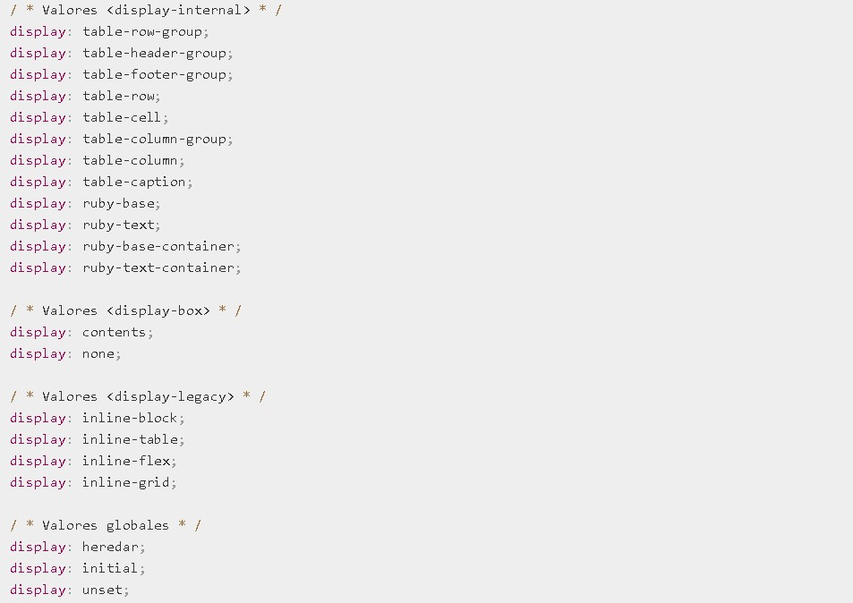
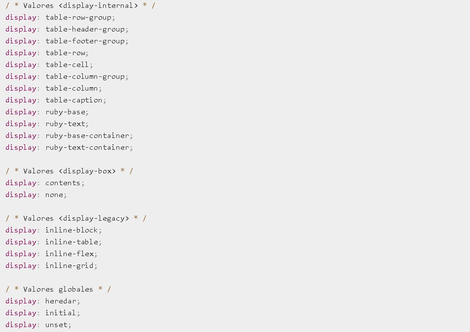

La propiedad CSS Display especifica si un elemento es tratado como block or inline element y el diseño usado por sus hijos, como flow layout (Diseño de Flujo), grid (Cuadricula) o flex(Flexible).
Formalmente la propiedad display establece los tipos de visualización interna y externa de un elemento. La tipo externa establece la participación de un elemento en flow layout; la tipo interna establece el layout (Diseño) de los hijos. Algunos valores de display están totalmente definidos con sus especificaciones propias; por ejemplo el detalle de qué pasa cuando display: flex es declarado y definido en la especificación de Modelo Flexible de Caja (Flexible Box Model specification) de CSS.
Además de los diferentes tipos de caja de visualización, el valor de none permite desactivar la visualización de un Elemento; cuando no se utiliza none, todos los elementos descendentes también quedan desactivados. El documento se procesa como si el elemento no existiera en el árbol de documentos
 

MDN Web Docs. (2020) Dispaly. [Código].Recuperado de:
https://developer.mozilla.org/es/docs/Web/CSS/display
MDN Web Docs. (2020) Dispaly. [Código].Recuperado de:
https://developer.mozilla.org/es/docs/Web/CSS/displayEstas palabras clave especifican el tipo de pantalla externa del elemento, que es esencialmente su función en el diseño de flujo: A continuación se definen:
Block: El elemento genera un cuadro de elemento de bloque
Inline: El elemento genera uno o más cuadros de elemento en línea.
CSS 2 usó una sintaxis de palabra clave única para la propiedad display, requiriendo palabras clave separadas para variantes de nivel de bloque e inline del mismo modo de disposición. Se definen como sigue:
inline-block: El elemento genera una caja de elemento de bloque que fluye con el contenido circundante como si fuera una sola caja en línea (comportándose como un elemento reemplazado)
Es equivalente a inline flow-root
MDN Web Docs. (2020).Display. Recuperado de:
https://developer.mozilla.org/es/docs/Web/CSS/displayuniwebsidad. (2017). Display. Recuperado de:
https://uniwebsidad.com/libros/css-avanzado/capitulo-4/propiedad-display